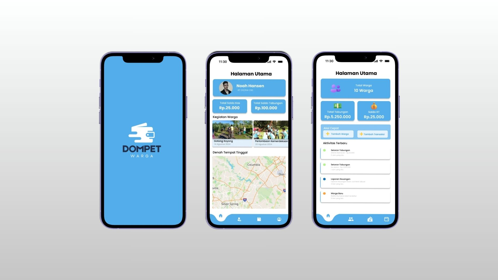
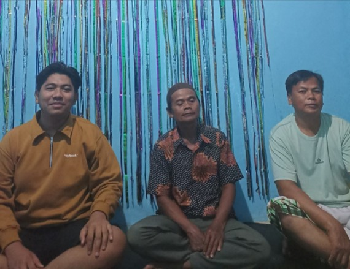
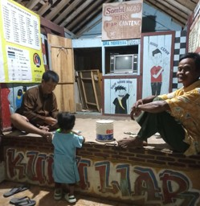
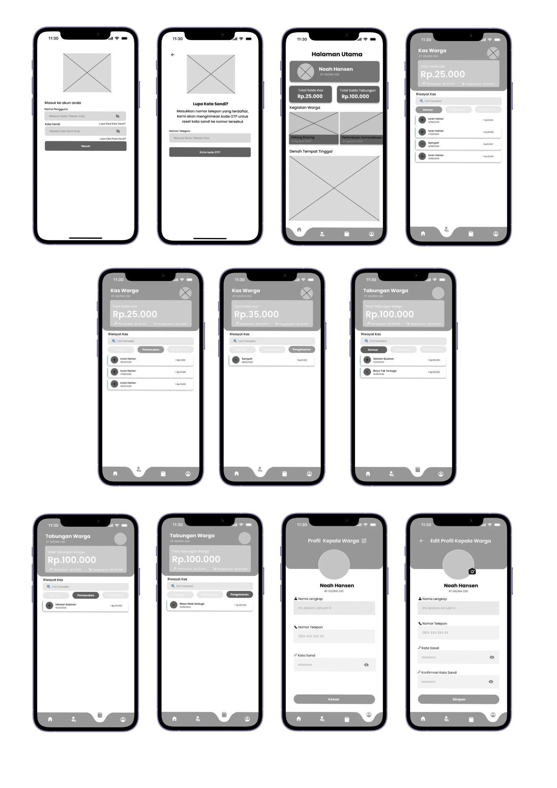
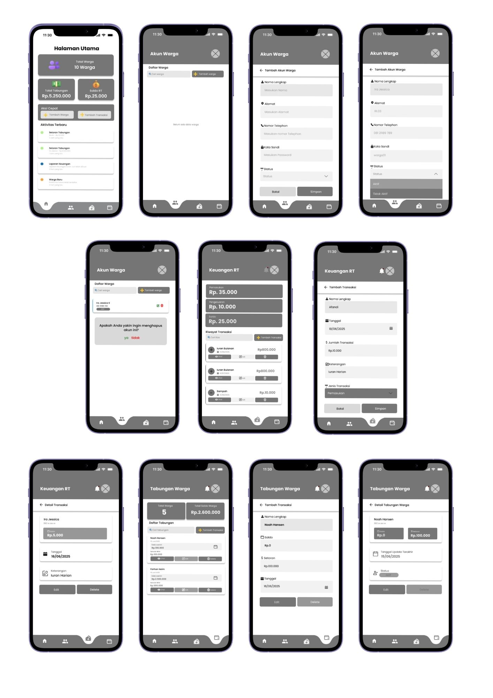
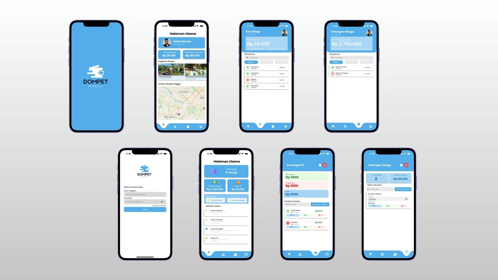

Digital wallet and community finance management mobile application design.

The financial management process in RT 03/RW 09, Desa Klapagading was still conducted manually, making it difficult for administrators to record financial transactions and provide transparent information to residents. To address these challenges, Dompet Warga was developed as a mobile application that digitalizes RT financial management and improves accessibility for both administrators and residents.
The manual financial recording process was inefficient, time-consuming, and prone to data inconsistencies. Residents also had limited access to financial reports and personal savings information, resulting in a lack of transparency in community financial management.
The goal of this project was to design a mobile application that simplifies RT financial management by digitizing income, expenses, financial reports, and residents' savings. The application also aims to improve transparency, increase administrative efficiency, and provide residents with easier access to financial information.
I observed the current financial management process at RT 03/RW 09, Desa Klapagading to understand how administrators record transactions and manage community finances.
To gain a deeper understanding of user needs, interviews were conducted with RT administrators and residents. The interviews explored their experiences in managing and accessing RT financial information, as well as the challenges they encountered in their daily activities.
The interviews indicated that both RT administrators and residents faced challenges with the existing manual financial management process. Administrators needed a more efficient way to record and manage financial data, while residents wanted transparent and easy access to financial reports and personal savings information.


Based on observations and user interviews, several key challenges were identified in the current financial management process.
Financial transactions were recorded manually, making the process inefficient and prone to errors.
Residents had limited access to financial reports and personal savings information.
Preparing financial reports manually required significant time and effort.
Manual documentation increased the chances of recording errors and missing financial data.
User personas were created to represent the characteristics, goals, and challenges of the application's two primary user roles: User and Admin. These personas served as a reference throughout the design process to ensure the proposed solution addressed the needs and expectations of each user group.
Residents need an easier way to view their bills, make community fee payments, and track their transaction history transparently, while RT administrators need a system that can efficiently manage resident data, record payments, and generate financial reports. The current manual payment and administrative process often leads to late payments, makes it difficult for residents to check their payment status and financial information, and increases the risk of recording errors by administrators. In addition, manual processes require more time and effort, reduce the efficiency of data management, and make it more difficult to provide timely and accurate financial information to all residents.
The information architecture was designed to organize the application's content and features into a clear hierarchy. This structure helps users navigate the system efficiently while ensuring a logical relationship between user and admin functionalities.
This stage focuses on designing the layout and information structure of the application. Low-fidelity wireframes were created to define the placement of key interface elements, navigation flow, and user interactions before moving to the visual design phase.


The final design showcases the high-fidelity screens of the Dompet Warga application, covering both user and admin interfaces including the splash screen, home dashboard, cash management, savings, and login flow.

To validate the usability of Dompet Warga, usability testing was conducted with 10 Users and 2 Admins. Participants were asked to complete predefined task scenarios that reflected the application's primary workflows. Their interactions, task completion, and feedback were observed to evaluate navigation, ease of use, and feature accessibility. The insights gathered from the testing were used to identify usability issues, refine the interface, and ensure the final design effectively met the needs of both user roles.